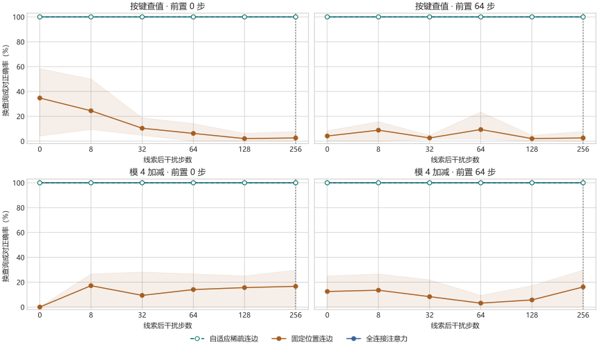

自适应记忆拓扑实验
模型把历史数字编码为节点，每次查询选择实际读取的连边。三种方式共用同一节点编码、消息更新和读出网络，仅改变选边规则。每组 8,000 道训练题、500 次更新，三个种子。训练前置噪声为 0–32 步，测试额外包含前置 64 步。
256 步外推
大字为换查询前后均正确。来源配对要求原题与更改每个相关值后的题都正确。联合要求两类变体全部正确。
| 连边方式 | 按键查值前置 0 步 | 按键查值前置 64 步 | 模 4 加减前置 0 步 | 模 4 加减前置 64 步 |
|---|---|---|---|---|
| 自适应稀疏连边 | 100.0%来源配对 100.0% · 联合 100.0% | 100.0%来源配对 100.0% · 联合 100.0% | 100.0%来源配对 100.0% · 联合 100.0% | 100.0%来源配对 100.0% · 联合 100.0% |
| 固定位置连边 | 2.6%来源配对 0.0% · 联合 0.0% | 2.6%来源配对 0.0% · 联合 0.0% | 16.7%来源配对 0.0% · 联合 0.0% | 16.1%来源配对 0.0% · 联合 0.0% |
| 全连接注意力 | 100.0%来源配对 100.0% · 联合 100.0% | 100.0%来源配对 100.0% · 联合 100.0% | 100.0%来源配对 100.0% · 联合 100.0% | 100.0%来源配对 100.0% · 联合 100.0% |
连边干预
对同一组已训练权重，换查询时强制读取原查询选中的边；仍重新计算新查询下的权重。相关边比例只统计实际连向正确值节点的边。换边比例按每跳每头分别计算。
| 任务 | 正常换查询 | 强制复用原边 | 被替换的边 | 相关值节点边占比 |
|---|---|---|---|---|
| 按键查值 · 前置 0 步 | 100.0% | 67.2% | 64.8% | 13.7% |
| 按键查值 · 前置 64 步 | 100.0% | 71.4% | 64.9% | 13.9% |
| 模 4 加减 · 前置 0 步 | 100.0% | 26.6% | 77.6% | 21.0% |
| 模 4 加减 · 前置 64 步 | 100.0% | 23.4% | 78.1% | 21.0% |
一对真实选边
种子 2，前置 64 步、线索后 256 步。查询从键 7 改为键 6，正确值从 1 改为 0。每次查询共选 32 条边，表中按值节点汇总被各跳各头选中的次数，位置从 0 开始。
| 写入内容 | 值节点位置 | 原查询的边数 | 换查询后的边数 |
|---|---|---|---|
| 键 8 → 值 3 | 65 | 5 | 4 |
| 键 7 → 值 1 | 67 | 6 | 7 |
| 键 6 → 值 0 | 69 | 5 | 6 |
各档干扰成绩
